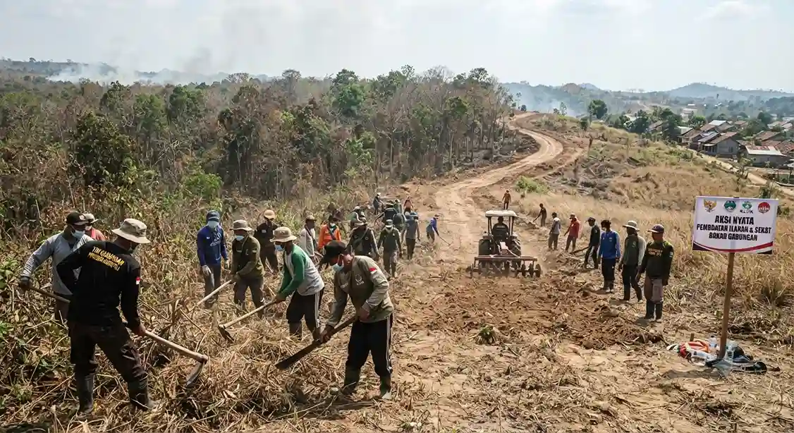

1. Pendahuluan: Ancaman Nyata Kebakaran Hutan di Musim Kemarau
Memasuki puncak musim kemarau, kawasan hutan dan lahan (Karhutla) di lereng Gunung Lawu kembali berada dalam status tingkat kerawanan yang tinggi. Kondisi vegetasi yang mengering serta tiupan angin kencang di dataran tinggi membuat potensi percikan api kecil berubah menjadi bencana ekologis yang masif dalam waktu singkat. Belajar dari pengalaman pahit insiden kebakaran hebat pada tahun-tahun sebelumnya yang menghanguskan ribuan hektare kawasan hutan serta merusak jaringan mata air warga, seluruh instansi terkait kini memperketat langkah antisipasi sejak dini.
1.1 Aksi Nyata Pembuatan Ilaran atau Sekat Bakar Gabungan
Sebagai langkah mitigasi taktis di lapangan, ratusan personel gabungan yang terdiri dari Perum Perhutani KPH Lawu Ds, unsur TNI, Polri, BPBD, relawan, hingga Masyarakat Peduli Api (MPA) dikerahkan untuk membangun ilaran atau sekat bakar. Pembuatan jalur pembatas api ini membentang sepanjang ribuan meter di titik-titik krusial lereng Gunung Lawu.
Pembuatan ilaran ini berfungsi sebagai jalur pemutus vegetasi agar apabila terjadi titik api atau kebakaran di suatu sektor, api tidak menjalar secara bebas meluas ke kawasan hutan lindung lainnya. Patroli rutin harian juga diintensifkan di sepanjang jalur pendakian resmi seperti Cemoro Sewu, Cemoro Kandang, hingga jalur pendakian tradisional.

2. Larangan Ketat Alat Pemicu Api dan Perapian Sembarangan
Pengelola kawasan wisata dan pos pendakian Gunung Lawu memberlakukan regulasi zero-tolerance terhadap segala bentuk aktivitas yang melibatkan api terbuka. Para pendaki maupun pengunjung dilarang keras membuat api unggun di sembarang tempat selama berada di area hutan maupun di atas pos perkemahan.
Selain api unggun, pemeriksaan barang bawaan (*checking logistik*) di pos perizinan kini semakin diperketat guna menyita alat-alat pemicu api yang berpotensi disalahgunakan. Pendaki diimbau untuk menggunakan kompor portabel kecil dengan pengawasan ekstra hati-hati, serta memastikan sisa bahan bakar atau bara api benar-benar padam sebelum melanjutkan perjalanan.
2.1 Faktor Utama Penyebab Karhutla di Kawasan Gunung Lawu
Berdasarkan evaluasi penanganan tahun-tahun sebelumnya, sebagian besar insiden kebakaran hutan di lereng Gunung Lawu dipicu oleh faktor kelalaian manusia serta kondisi alam yang ekstrem:
- Perapian & Api Unggun Belum Padam: Aktivitas pendaki yang membuat api unggun untuk menghangatkan badan namun ditinggalkan begitu saja tanpa disiram air hingga padam sempurna.
- Puntung Rokok Sembarangan: Membuang puntung rokok yang masih menyala di antara semak belukar atau savana kering yang sangat sensitif terhadap panas.
- Faktor Gesekan Alam: Pada musim kemarau ekstrem, gesekan antar-ranting kering yang terkena terik matahari intensif juga dapat memicu titik api spontan.
“Kesadaran untuk tidak membawa atau menyalakan pemicu api sembarangan adalah kunci utama penyelamatan ekosistem Gunung Lawu. Satu puntung rokok yang dibuang sembarangan bisa meluluhlantakkan ribuan hektare hutan kita.”
3. Peran Aktif Pendaki dan Masyarakat Peduli Api (MPA)
Kelestarian alam Gunung Lawu tidak hanya bergantung pada petugas penjaga, melainkan tanggung jawab moral bersama seluruh elemen masyarakat dan wisatawan. Pendaki diwajibkan membawa kembali seluruh sampah bawaannya serta melaporkan segera kepada petugas pos terdekat jika menemukan tanda-tanda kepulan asap mencurigakan di dalam kawasan hutan.
4. Kesimpulan & FAQ
Ancaman potensi karhutla di lereng Gunung Lawu memerlukan kewaspadaan tinggi dari seluruh pihak, khususnya di tengah musim kemarau saat ini. Dengan diterapkannya larangan ketat alat pemicu api, pembuatan ilaran sekat bakar, serta peningkatan kesadaran para pendaki, kelestarian ekosistem dan sumber air di kawasan Gunung Lawu dapat terus terjaga dengan baik demi keselamatan bersama.
Pertanyaan yang Sering Diajukan (FAQ)
Apakah pendaki diperbolehkan membawa kompor portabel?
Pendaki diperbolehkan membawa kompor portabel jenis gas mini untuk keperluan memasak logistik, dengan catatan penggunaannya harus diawasi ketat dan dilarang menyalakan api unggun terbuka.
Apa tindakan petugas jika mendapati pendaki membuat api unggun?
Petugas pos pendakian dan tim patroli tidak akan segan-segan memberikan sanksi tegas berupa teguran keras, pemadaman paksa, hingga memasukkan pendaki ke dalam daftar hitam (*blacklist*) larangan mendaki.
Bagaimana cara melaporkan jika melihat titik api di hutan?
Anda dapat segera melapor kepada pos penjagaan terdekat, petugas Perhutani, atau menghubungi layanan darurat admin Wisata Lawu melalui WhatsApp resmi.